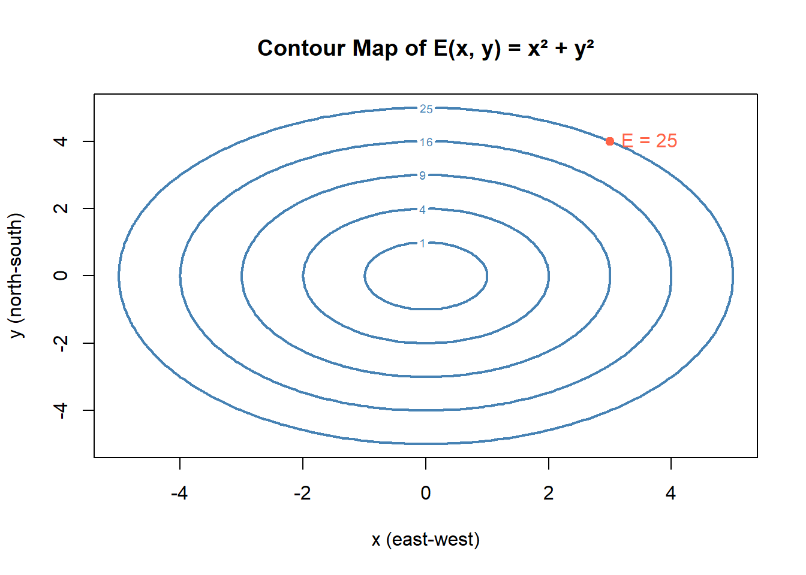

Chapter 5 üöß Under Construction: Applications
5.1 Using Derivatives to Find Extremes
In environmental science, we often want to know:
- What is the maximum population an ecosystem can support?
- When is the lowest point of CO₂ emissions over time?
- At what point will a species’ growth rate slow down?
These kinds of questions are about extrema—finding the highest or lowest values a function can take.
Mathematically, these points are called maximums and minimums. Together, we call them extreme values. And calculus gives us a powerful tool to find them: the derivative.
5.2 The Idea
If a function reaches a peak or a valley, its graph changes direction. At that turning point, the slope of the tangent line is zero.
So, we look for values of \(x\) where:
\[ f'(x) = 0 \]
These are called critical points. They are the candidates for maximums or minimums.
5.3 Step-by-Step: Finding Extrema
Here’s the process we’ll use:
- Take the derivative of the function.
- Find critical points by solving \(f'(x) = 0\).
- Use a first derivative sign chart and second derivative sign chart to classify each critical point as a maximum, minimum, or neither.
- Evaluate the function at those points to find the extreme values.
5.3.1 Step 1: Take the Derivative
To find extrema, our first step is to compute the derivative of the function. This derivative represents the rate of change of the quantity we’re modeling—how fast it’s increasing or decreasing at each point.
5.3.1.1 Why the Derivative?
If we think of a graph as a hill or a valley, then:
- The slope of the function tells us whether we’re going uphill (positive slope) or downhill (negative slope).
- At a peak or valley, the slope flattens out. That’s why extrema occur when the derivative equals zero.
####️ How to Differentiate
To take the derivative, apply the derivative rules you’ve learned—like the power rule, sum rule, product rule, or chain rule—term by term.
Tip: Write your function neatly and apply rules one piece at a time. If your function involves products, quotients, or composition of functions, use the appropriate rules (Product Rule, Quotient Rule, Chain Rule).
5.3.2 Step 2: Find the Critical Points
Now that we have the derivative, the next step is to find the values of \(x\) where the slope is zero. These are called critical points—the points where the function might reach a maximum or minimum.
5.3.2.1 Why Set the Derivative to Zero?
At any peak or valley on a graph, the function levels off, meaning the slope is zero. So, to find these potential extrema, we solve:
\[ f'(x) = 0 \]
Critical points also occur where the derivative is undefined—like at sharp corners or cusps—but for now we’re focusing on smooth curves where the derivative exists everywhere.
Depending on the complexity of the derivative, you might:
- Try factoring the expression (easiest when possible)
- Use the quadratic formula if the derivative is quadratic
- Use numerical methods or a graphing tool if algebraic solutions are tricky
5.3.2.2 Strategy Tips
- Always try factoring first. It’s often the fastest way to identify roots.
- If factoring fails and your equation is quadratic, use the quadratic formula:
\[ x = \frac{-b \pm \sqrt{b^2 - 4ac}}{2a} \]
- If your equation is higher-degree and doesn’t factor easily, consider graphing the derivative or using numerical solvers in R, a calculator, or software like Desmos.
Once you’ve found the critical points, you can analyze each one to determine whether it’s a maximum, minimum, or neither.
5.3.3 Step 3: Classify Each Critical Point Using a Sign Chart
After finding the critical points (where \(f'(x) = 0\)), we need to determine whether each one corresponds to a local maximum, local minimum, or neither.
One powerful tool for this is the first derivative sign chart. This method helps us understand how the function behaves around each critical point by analyzing whether the slope is positive or negative on either side.
5.3.3.1 How to Build a First Derivative Sign Chart
Factor the derivative, if possible.
This makes it easier to identify where the sign changes occur.Mark the critical points on a number line.
These divide the domain into intervals.Choose a test value in each interval.
Plug the test value into the factored derivative to determine its sign in that interval.Record the sign of the derivative in each interval.
- If the sign changes from positive to negative, the function has a local maximum.
- If the sign changes from negative to positive, the function has a local minimum.
- If the sign does not change, it may be a flat point or inflection point.
- If the sign changes from positive to negative, the function has a local maximum.
5.3.3.2 What the Signs Tell You
| Interval | Sign of \(f'(x)\) | Behavior of \(f(x)\) |
|---|---|---|
| \(f'(x) > 0\) | Positive | Function is increasing |
| \(f'(x) < 0\) | Negative | Function is decreasing |
| \(f'(x) = 0\) | Zero at a point | Function has flat slope |
By sketching this number line and labeling the behavior in each interval, we can visualize how the function is changing and pinpoint maxima and minima accurately.
Tip: Always include the sign of the leading coefficient in your analysis! It can flip the sign of the entire derivative.
5.3.4 Step 4: Evaluate the Function at the Critical Points
Once you’ve identified which critical points are maximums or minimums, the next step is to find the actual function values at those points. These values represent the extrema—the highest and lowest outputs of the function.
5.3.4.1 How to Evaluate
To do this, simply substitute each critical point back into the original function (not the derivative).
If your function is \(f(x)\), and your critical points are \(x = a\) and \(x = b\), you compute:
- \(f(a)\): the function value at the first critical point
- \(f(b)\): the function value at the second critical point
Repeat this for all critical points.
5.3.4.2 What You’ve Learned
- The value \(f(a)\) tells you how high or low the function gets at \(x = a\)
- Comparing all the values lets you determine which are local minimums, local maximums, or global extremes
5.3.4.3 Final Step
Once you’ve evaluated the function at each critical point, you can summarize the extrema as coordinate points:
- Minimum: \((a, f(a))\)
- Maximum: \((b, f(b))\)
These coordinates give precise information about where and when a quantity reaches its highest or lowest point—critical in environmental models, economics, biology, and more.
5.4 üå± Environmental Example: A Cubic Population Model
Let’s investigate a population model defined by a cubic function:
\[ P(t) = -t^3 + 6t^2 - 9t + 20 \]
# Define the cubic function
P <- function(t) -t^3 + 6*t^2 - 9*t + 20
# Plot the function
curve(P(x), from = 0, to = 5,
xlab = "Time (t)",
ylab = "Population P(t)",
main = expression(P(t) == -t^3 + 6*t^2 - 9*t + 20),
col = "forestgreen", lwd = 2)
# Add grid
grid()
This function could represent a population that declines initially and reaches a minimum. Due to favorable conditions the population starts to increase, and then declines because of environmental stressors like competition, disease, or habitat loss.
5.4.1 Step 1: Find the First Derivative
To identify when the population reaches a local maximum or minimum, we begin by finding the first derivative of the function \(P(t)\). The first derivative tells us the rate of change of the population with respect to time — in other words, whether the population is increasing or decreasing at a given moment.
Our original function is:
\[ P(t) = -t^3 + 6t^2 - 9t + 20 \]
To take the derivative, apply the power rule term by term:
- The derivative of \(-t^3\) is \(-3t^2\)
- The derivative of \(6t^2\) is \(12t\)
- The derivative of \(-9t\) is \(-9\)
- The constant term \(20\) has a derivative of 0 (since constants don’t change)
So the full derivative is:
\[ P'(t) = -3t^2 + 12t - 9 \]
5.4.2 What Does This Mean?
- This new function \(P'(t)\) describes how fast the population is changing at any given time \(t\).
- If \(P'(t) > 0\), the population is increasing.
- If \(P'(t) < 0\), the population is decreasing.
- If \(P'(t) = 0\), the population has a horizontal slope — which might indicate a peak (maximum) or valley (minimum).
Next Step: To find the exact moments when these changes occur, we set \(P'(t) = 0\) and solve for \(t\). This gives us the critical points where the population may reach an extreme value.
5.4.3 Step 2: Find the Critical Points
To find extreme points (like maximums or minimums), we look for where the derivative equals zero. These are called critical points, and they occur where:
- The slope of the function is zero (i.e., a horizontal tangent line), or
- The derivative is undefined (we’ll cover this a little later).
We’re solving:
\[ P'(t) = -3t^2 + 12t - 9 = 0 \]
This is a quadratic equation, so we can solve it by factoring or using the quadratic formula.
5.4.3.1 Try Factoring First
We can simplify the equation by dividing both sides by \(-3\):
\[ t^2 - 4t + 3 = 0 \]
Now factor:
\[ (t - 1)(t - 3) = 0 \]
This tells us the derivative is zero at:
\[ t = 1 \quad \text{and} \quad t = 3 \]
These are our critical points — the places where the slope of the curve is zero, and the function might reach a local max or min.
5.4.3.2 When Factoring Doesn’t Work
Sometimes factoring is difficult or impossible. If our derivative is a quadratic equation, we use the quadratic formula:
\[ t = \frac{-b \pm \sqrt{b^2 - 4ac}}{2a} \]
For our derivative:
\[ P'(t) = at^2 + bt + c = -3t^2 + 12t - 9 \]
So:
- \(a = -3\)
- \(b = 12\)
- \(c = -9\)
Plugging into the formula:
\[ t = \frac{-12 \pm \sqrt{(12)^2 - 4(-3)(-9)}}{2(-3)} = \frac{-12 \pm \sqrt{144 - 108}}{-6} \]
\[ t = \frac{-12 \pm \sqrt{36}}{-6} = \frac{-12 \pm 6}{-6} \]
\[ t = 1 \quad \text{and} \quad t = 3 \]
Key Takeaway: Whether you factor or use the quadratic formula, the goal is the same:
Find where the derivative equals zero. These points are where the original function might reach a peak or valley.
5.4.4 Step 3: Constructing a Sign Chart
Let’s dig deeper into how to analyze the sign of a derivative in different intervals using the factored form.
When we think of a local maximum - we think of this as a high point on the function, so either side of the function would decrease from this peak. So as we approach a maxima, the slope of the function would be positive. At the maxima (the critical point), the slope goes to zero. Then as we come down of the peak, the slope of function is negative. The reverse is true for a mimima.
This feature is what a sign chart takes advantage of. What we will be doing is looking at the sign of the derivative on either side of a critical point. And bsed on the the sign determine if its a max or a min.
In this example we’re working with the first derivative:
\[ P'(t) = -3(t - 1)(t - 3) \]
This is already factored, which makes it easier to analyze.
So the critical points are at \(t = 1\) and \(t = 3\). Sketch a number line and place these critical points on the line
library(ggplot2)
ggplot() +
# Number line with arrowheads
geom_segment(aes(x = 0, xend = 5, y = -0, yend = 0),
arrow = arrow(type = "closed", ends = "both", length = unit(0.15, "inches")),
linewidth = 1.2) +
# Critical points
geom_point(aes(x = 1, y = 0), size = 3) +
geom_point(aes(x = 3, y = 0), size = 3) +
# Labels just above the line
annotate("text", x = 1, y = 0.07, label = "1 (critical point)", hjust = 0.5) +
annotate("text", x = 3, y = 0.07, label = "3 (critical point)", hjust = 0.5) +
# Interval labels just below the line
annotate("text", x = 0.5, y = -0.07, label = "A", color = "blue") +
annotate("text", x = 2, y = -0.07, label = "B", color = "forestgreen") +
annotate("text", x = 4, y = -0.07, label = "C", color = "red") +
coord_cartesian(ylim = c(-1, 1))+
theme_void()These divide the number line into three intervals:
- Interval A: \((-\infty, 1)\)
- Interval B: \((1, 3)\)
- Interval C: \((3, \infty)\)
5.4.5 Step-by-Step Sign Analysis
| Interval | Test Point | \(t - 1\) | \(t - 3\) | Product of Factors | Multiply by \(-3\) | Sign of \(P'(t)\) | Behavior of \(P(t)\) |
|---|---|---|---|---|---|---|---|
| \(t < 1\) | 0 | \(-1\) | \(-3\) | \((+)\) | \(-\) | Negative | Decreasing |
| \(1 < t < 3\) | 2 | \(+1\) | \(-1\) | \(-\) | \(+\) | Positive | Increasing |
| \(t > 3\) | 4 | \(+3\) | \(+1\) | \(+\) | \(-\) | Negative | Decreasing |
5.4.5.1 How the Signs Work
For \(P'(t) = -3(t - 1)(t - 3)\):
- Evaluate each factor at the test point:
- For example, at \(t = 0\), \(t - 1 = -1\), \(t - 3 = -3\)
- Determine the sign of each factor:
- Two negative numbers multiplied give a positive
- Include the leading coefficient:
- We have a -3 multiplied by the product of the factors.
- So, \(-3 \cdot (+) = -\), meaning the derivative is negative
- Interpret:
- A negative derivative means the original function \(P(t)\) is decreasing
- A positive derivative means it is increasing
5.4.6 Step 4: Evaluate the Function
Now that we’ve identified the critical points at \(t = 1\) and \(t = 3\), we can find the population values at those times by plugging them into the original function:
\[ P(t) = -t^3 + 6t^2 - 9t + 20 \]
5.4.6.2 At \(t = 3\):
\[ P(3) = -(3)^3 + 6(3)^2 - 9(3) + 20 = -27 + 54 - 27 + 20 = 20 \]
So:
- \((1, 16)\) is a local minimum
- \((3, 20)\) is a local maximum
Now let’s update the plot to reflect this, with:
- Dashed horizontal lines showing the population value at each critical point
- Labels showing the full \((t, P(t))\) coordinates
P <- function(t) -t^3 + 6*t^2 - 9*t + 20
curve(P(x), from = 0, to = 5, ylim = c(0, 25), col = "forestgreen", lwd = 2,
xlab = "Time (t)", ylab = "Population P(t)",
main = "Cubic Model with Extrema")
# Critical point coordinates
t1 <- 1
t2 <- 3
P1 <- P(t1)
P2 <- P(t2)
# Mark critical points
points(t1, P1, pch = 19, col = "blue")
points(t2, P2, pch = 19, col = "red")
# Dashed horizontal lines at population values
abline(h = c(P1, P2), lty = 2, col = "gray60")
# Dashed vertical lines at t-values
abline(v = c(t1, t2), lty = 2, col = "gray70")
# Labels
text(t1, P1 + 1.5, labels = "Local Min\n(1, 16)", col = "blue", pos = 3)
text(t2, P2 , labels = "Local Max\n(3, 20)", col = "red", pos = 3)5.4.7 Final Takeaways
- Use the factored form of the derivative—it makes sign analysis much easier.
- Pick one value per interval to test—this is enough to determine the sign throughout that interval.
- Include the leading coefficient in your sign analysis—it can flip the sign of the whole expression!
- The sign of \(P'(t)\) tells you whether the original function \(P(t)\) is increasing or decreasing in that interval.
The first derivative sign chart helps us identify what type of a extreme value (max or min) we have at the critical points.
##Second Derivative Sign Charts: Understanding Concavity
Just like the first derivative tells us whether a function is increasing or decreasing, the second derivative tells us about the curvature of the function—also known as concavity.
5.4.8 What Does the Second Derivative Tell Us?
If we think of the graph of a function as a hilly landscape:
Concave Up: Looks like a valley (opens upward)
→ The slope is increasing
→ The second derivative is positiveConcave Down: Looks like a hill (opens downward)
→ The slope is decreasing
→ The second derivative is negative
The second derivative tells us how the rate of change is changing.
5.4.9 How to Use a Second Derivative Sign Chart
We follow similar steps as the first derivative sign chart, but with \(f''(x)\):
- Take the second derivative of the function: \(f''(x)\)
- Set \(f''(x) = 0\) and solve to find possible inflection points
- Plot those values on a number line
- Pick test points in each interval to determine the sign of \(f''(x)\)
- Use the sign chart to determine concavity:
- \(f''(x) > 0\): concave up
- \(f''(x) < 0\): concave down
5.5 The procedure is identical to that of the first derivative sign chart. The difference is in the interpreation of the signs. The second derivative sign chart helps us determine information about the functions convavity.
5.5.1 What Are Inflection Points?
An inflection point is where the function changes concavity—from concave up to concave down or vice versa.
These occur where the second derivative changes sign.
Note: Not every point where \(f''(x) = 0\) is an inflection point. The sign must actually change on either side.
####What Can We Learn?
- Where the function bends up or down
- Where the graph changes shape (inflection points)
- How curvature affects the behavior of the system
In environmental modeling, this helps us:
- Understand when population growth is accelerating or decelerating
- Detect turning points in resource usage
- Identify shifts in environmental trends
5.5.1.1 Summary
| Interval | \(f''(x)\) Sign | Concavity | Interpretation |
|---|---|---|---|
| \(x < a\) | \(> 0\) | Concave Up | Slope is increasing |
| \(x = a\) | 0 (possible IP) | — | Candidate for inflection point |
| \(x > a\) | \(< 0\) | Concave Down | Slope is decreasing |
Use this analysis to combine with the first derivative for a complete picture of the function’s behavior.